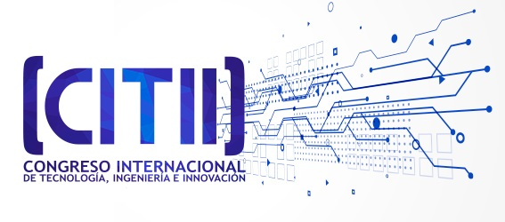

La ingeniería es una actividad creativa, que integra elementos de conocimiento científico y tecnológico, con el fin de dar soluciones novedosas a problemas existentes en diferentes áreas. La ingeniería requiere la participación de múltiples áreas de conocimiento preparadas a dar respuestas a los restos de una sociedad cambiante, integrada por el avance de las tecnologías que interactúan y se complementan entre sí.
Los nuevos paradigmas del siglo XXI se caracterizan como sistemas tecnológicos, que son conjuntos de tecnologías relacionadas, generadoras de valor y creadoras de dinámicas sociales. El centro de los sistemas tecnológicos se encuentra en los sistemas de información y la informática. La convergencia de electrónica, informática, multimedia, industrial y agroindustrial está produciendo cambios profundos en el crecimiento de una sociedad. Por tal razón, la tecnología, Ingeniería e Innovación son elementos centrales para el desarrollo de sociedades de conocimiento sostenibles.
La facultad de ingeniería de la Universidad San Buenaventura Cali, realizará el Segundo Congreso Internacional de Tecnología, Ingeniería e Innovación. El congreso tendrá la participación de ponentes internacionales donde darán charlas relacionadas en diferentes disciplinas, en AgroIndustrial, Electrónica, Industrial, Multimedia y Sistemas y se llevará a cabo del 25 al 26 de Mayo del 2023 .
Durante el evento se expondrán proyectos de índole científico en el desarrollo y aplicación de nuevas tecnologías y procesos pro de la ingeniería.
Programacion : 25 de Mayo
| # |
SALA 1 |
SALA 2 |
SALA 3 |
SALA 4 |
| 8:30 – 9:00 |
Acto Protocolario de Inauguración |
| 9:00 – 9:30 |
PONENCIA MAGISTRAL No 1. “Inteligencia artificial como herramienta de soporte a la formación de programadores” |
| 10:00 – 10:30 |
Receso |
| 10:30 – 11:00 |
Propuesta Ingeniería de Software |
Implementación de ABP |
Abutilon Insigne Planch |
fábrica de aprendizaje |
| 11:00 – 11:30 |
pruebas automáticas |
estrategias Didácticas empleadas por los docentes |
seguridad en aplicaciones web |
Identificación de las estrategias |
| 11:30 – 12:00 |
prácticas de multifuncionalida |
Entorno de aprendizaje |
dispositivos móviles |
equipos ágiles |
| 2:00 – 2:30 |
Tácticas arquitectónicas de seguridad para e-voting |
M.N.P (Moviendo Nuevas Partes) |
| 2:30 – 4:00 |
Buenas prácticas para el desarrollo de software móvil orientadas en SMSD y ASD |
Evaluación de usabilidad en sistemas de gestión académica |
| 4:00 – 5:00 |
Aprendizaje Basado en Problemas (ABP) aplicados en Ingeniería de Sistemas, Computación e Informática. |
Advertising WIFI en Pasto |
Programacion : 26 de Mayo
| # |
SALA 1 |
SALA 2 |
SALA 3 |
SALA 4 |
| 8:30 – 9:00 |
Estudios del impacto de la construcción del túnel de La Línea en los Hidrosistemas |
| 9:00 – 9:30 |
PONENCIA MAGISTRAL No 2. “nube como herramienta de soporte a la formación de programadores” |
| 10:00 – 10:30 |
Receso |
| 10:30 – 11:00 |
Comparación de modelos estadísticos para modelación de morfología urbana |
Implementación de ABP |
Desarrollo de un brazo robótico manipulador de cuatro grados de libertad con reconocimiento de objetos por visión artificial |
fábrica de aprendizaje |
| 11:00 – 11:30 |
Estructuras Compuestas Acero Concreto: solución para estructuras Industrializadas y en Altura |
estrategias Didácticas empleadas por los docentes |
Desarrollo de un prototipo didáctico de prensa universal para pruebas de tensión en materiales plásticos. |
Identificación de las estrategias |
| 11:30 – 12:00 |
Reutilización de caucho reciclado de llantas para la construcción de aisladores sísmicos para estructuras bajas |
Entorno de aprendizaje |
Desarrollo De Un Prototipo Semiautomático Para El Molido Y Moldeo De Quesos. |
equipos ágiles |
| 2:00 – 2:30 |
Secciones estructurales eficientes tras el aprovechamiento y transformación de residuos agroindustriales |
DESARROLLO DE UNA HERAMIENTA DIDÁCTICA |
| 2:30 – 4:00 |
“Empreendedorismo Tecnológico” |
(INGENIERÍA MECATRÓNICA) |
| 4:00 – 5:00 |
SISTEMAS DE CAPTURA DE MOVIMIENTO COMO HERRAMIENTA DE APOYO EN SALUD: UNA REVISIÓN DE SU USO Y APLICACIÓN |
Diseño y desarrollo de un Robot zoomórfico hexápodo controlado por ROS |